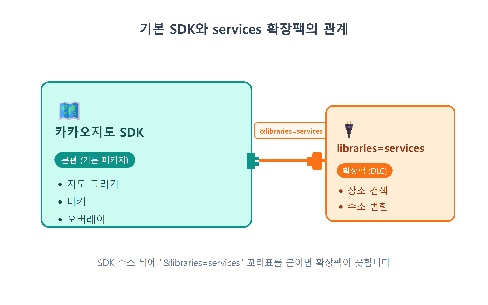
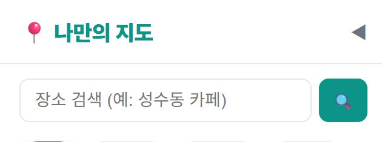
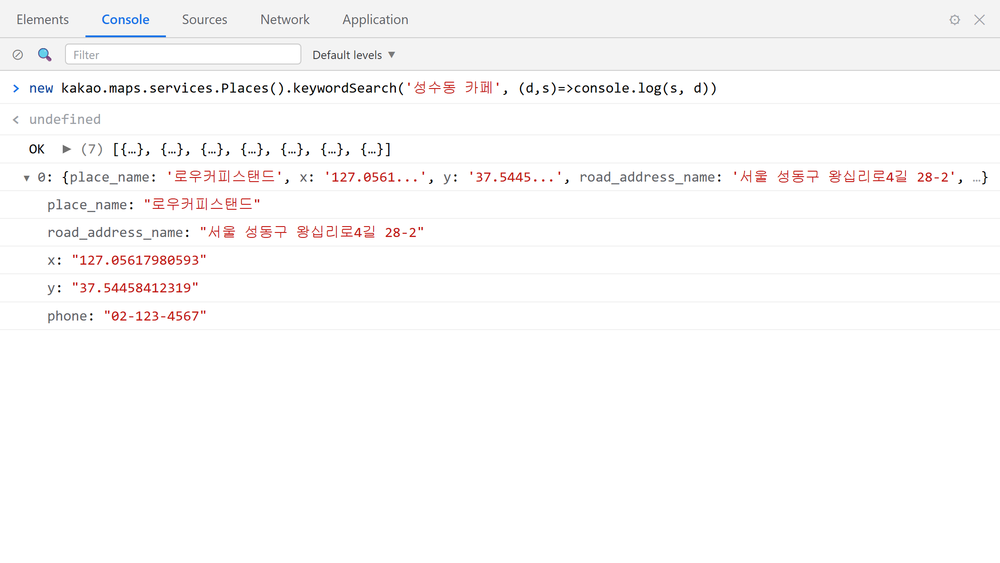
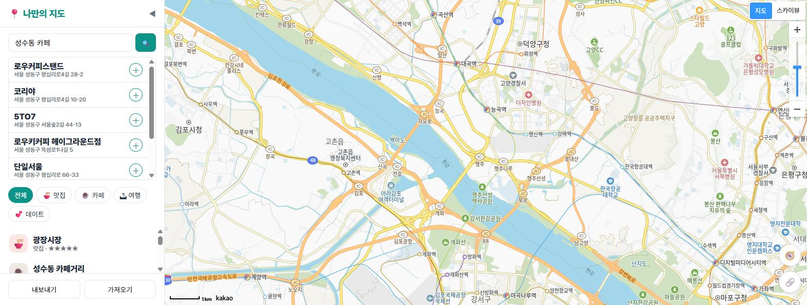
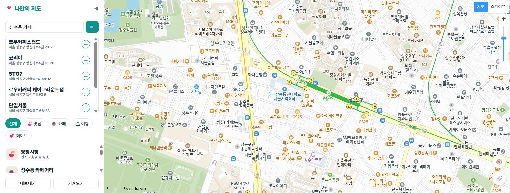
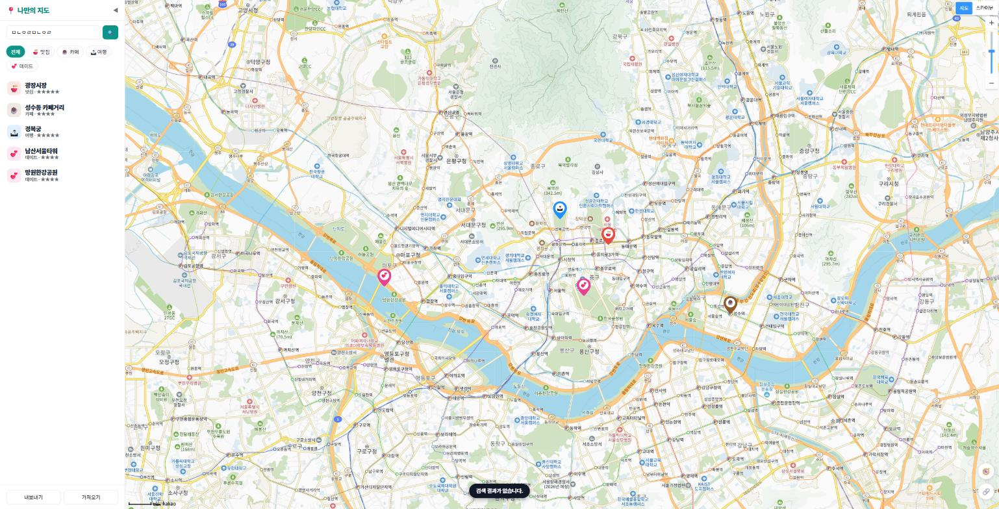

15장 키워드 장소 검색¶
이 장에서 배우는 것
- 지도 SDK의 확장팩인 services 라이브러리를 로드합니다 (
&libraries=services) kakao.maps.services.Places객체와keywordSearch메서드로 장소를 검색합니다- 콜백 함수와
Status.OK로 비동기 응답을 처리하는 법을 배웁니다 - 검색 결과 상위 7개를 사이드바 목록으로 렌더링합니다
- 결과를 클릭하면
panTo로 지도가 그 장소까지 미끄러져 가게 만듭니다
14장까지 우리 지도는 꽤 근사해졌습니다. 마커가 찍히고, 말풍선이 열리고, 카테고리 버튼으로 🍜맛집만 골라 볼 수도 있습니다. 그런데 써 보면 볼수록 한 가지 불편함이 커집니다. 새 장소를 넣으려면 좌표를 알아야 한다는 점입니다. 12장에서 우리는 카카오맵에서 우클릭해 위도·경도를 복사하는 방법을 배웠지만, 솔직히 말해 매번 그러기는 번거롭습니다. 친구가 "성수동에 괜찮은 카페 있던데"라고 말하면, 우리는 카페 이름만 알지 좌표는 모릅니다.
생각해 보면 카카오맵 앱에서는 이 문제를 이미 해결하고 있습니다. 검색창에 "성수동 카페"라고 치면 후보 목록이 주르륵 나오고, 하나를 누르면 지도가 그리로 날아가죠. 좌표 따위는 아무도 신경 쓰지 않습니다. 좋은 소식은, 카카오가 바로 그 검색 기능을 우리 같은 개발자에게도 열어 두었다는 것입니다. 이번 장에서는 우리 앱에 키워드 장소 검색을 답니다. 검색창에 낱말을 치면 카카오의 방대한 장소 데이터베이스가 답을 주고, 결과를 클릭하면 지도가 그 자리로 이동합니다. 이 장이 끝나면 여러분의 지도는 "보는 지도"에서 "찾는 지도"로 한 단계 진화합니다.
15.1 services 라이브러리 — 지도 SDK의 확장팩¶
시작하기 전에 짚고 갈 개념이 하나 있습니다. 9장에서 불러온 카카오지도 SDK는 사실 지도를 그리는 일만 담당합니다. 지도 타일을 내려받아 화면에 깔고, 마커를 찍고, 오버레이를 띄우는 것까지가 기본 SDK의 몫입니다. 장소 검색이나 주소를 좌표로 바꾸는 기능은 기본 패키지에 들어 있지 않습니다.
게임에 비유하면 기본 SDK는 본편이고, 검색 기능은 확장팩(DLC)입니다. 카카오는 이 확장팩에 services라는 이름을 붙였습니다. 확장팩을 켜는 방법은 아주 간단합니다. SDK를 불러오는 주소 뒤에 &libraries=services라는 꼬리표를 하나 붙이면 끝입니다. 왜 처음부터 다 넣어 주지 않냐고요? 검색 기능을 안 쓰는 앱까지 무거운 코드를 내려받게 하는 것은 낭비이기 때문입니다. 필요한 사람만 필요한 만큼 가져가라는 설계죠.

우리 앱에서 SDK 주소를 조립하는 곳은 9장에서 만든 src/loader.js 한 곳뿐입니다. "SDK 로드는 한 곳에서만"이라는 원칙을 지켜 온 덕분에, 수정할 파일도 한 곳뿐입니다. Claude Code에게 이렇게 시켜 봅시다.
🗣 이렇게 시키세요
src/loader.js에서 카카오 SDK 주소에 &libraries=services를 추가해줘. 다음 기능으로 장소 키워드 검색을 만들 거야. 다른 부분은 건드리지 마.
Claude Code가 고친 loader.js는 이렇습니다. 바뀐 곳은 단 한 줄입니다.
// src/loader.js — 카카오 지도 SDK를 동적으로 불러오는 모듈
export function loadKakaoSdk() {
return new Promise((resolve, reject) => {
const key = import.meta.env.VITE_KAKAO_JS_KEY;
if (!key) {
reject(new Error('VITE_KAKAO_JS_KEY가 .env에 없습니다.'));
return;
}
const script = document.createElement('script');
script.src =
`https://dapi.kakao.com/v2/maps/sdk.js?appkey=${key}` +
`&autoload=false&libraries=services`; // ← 확장팩 추가!
script.onload = () => kakao.maps.load(() => resolve(kakao));
script.onerror = () => reject(new Error('카카오 SDK 로드 실패 — 키/도메인 확인'));
document.head.appendChild(script);
});
}
주소의 물음표(?) 뒤는 이름=값 쌍을 &로 이어 붙이는 쿼리 문자열입니다. appkey로 우리가 누구인지 밝히고, autoload=false로 "준비되면 내가 직접 시작하겠다"고 말하고(9장), 이제 libraries=services로 "검색 확장팩도 같이 주세요"라고 요청하는 셈입니다. 확장팩이 여러 개 필요하면 쉼표로 이어서 libraries=services,clusterer처럼 씁니다. 22장에서 마커 클러스터러를 배울 때 실제로 그렇게 확장하게 됩니다.
제대로 붙었는지 바로 확인해 봅시다. 개발 서버(npm run dev)가 켜진 상태에서 브라우저를 새로고침하고, ++f12++ 로 개발자도구 콘솔을 연 다음 이렇게 입력해 보세요.
{Places: ƒ, Geocoder: ƒ, Status: {…}, ...} 같은 객체가 출력되면 성공입니다. 꼬리표를 붙이기 전이라면 undefined가 나왔을 겁니다. 이 객체 안에 오늘의 주인공 Places가 들어 있습니다.
⚠️ 주의
&libraries=services를 붙였는데도 kakao.maps.services가 undefined라면, 십중팔구 브라우저가 예전 스크립트를 캐시하고 있는 경우입니다. ++ctrl+shift+r++ 로 강력 새로고침을 해 보세요. 그래도 안 되면 주소에 오타(libraries의 철자, & 누락)가 없는지 loader.js를 다시 확인합니다.
15.2 검색창 UI 만들기¶
검색 기능을 부르기 전에, 사용자가 낱말을 입력할 검색창부터 필요합니다. 14장에서 만든 필터 버튼 위쪽, 사이드바 제목 바로 아래가 좋은 자리입니다. 검색창(입력칸 + 🔍 버튼)과 그 아래에 결과가 나타날 목록(ul)을 만들어 달라고 시켜 봅시다.
🗣 이렇게 시키세요
index.html 사이드바 제목 아래에 장소 검색 UI를 추가해줘. 텍스트 입력칸(id=search-input, 플레이스홀더 "장소 검색 (예: 성수동 카페)")과 🔍 버튼(id=btn-search)을 한 줄로 놓고, 그 아래에 검색 결과 목록 ul(id=search-results)을 만들어줘. 결과 목록은 평소에 hidden으로 숨겨두고, style.css에 어울리는 스타일도 넣어줘.
Claude Code가 index.html의 사이드바에 추가한 마크업입니다.
<div id="search-box">
<input id="search-input" type="text" placeholder="장소 검색 (예: 성수동 카페)" />
<button id="btn-search">🔍</button>
</div>
<ul id="search-results" hidden></ul>
구조는 단순합니다. search-box 안에 입력칸과 버튼이 나란히 있고, 결과 목록 search-results는 hidden 속성 덕분에 평소에는 화면에서 사라져 있습니다. 검색 결과가 생기는 순간에만 자바스크립트로 hidden을 풀어 보여 줄 계획입니다. 13장에서 말풍선을 "필요할 때만 연다"고 했던 것과 같은 발상입니다. 화면의 요소는 상태에 따라 나타나고 사라집니다.
스타일도 style.css에 함께 들어갑니다. 핵심만 발췌하면 이렇습니다.
#search-box { display: flex; gap: 6px; padding: 12px 16px 6px; }
#search-input {
flex: 1; padding: 9px 12px; border: 1px solid var(--line); border-radius: 8px; font-size: 14px;
}
#btn-search { border: none; background: var(--brand); color: #fff; border-radius: 8px; width: 40px; cursor: pointer; }
#search-results {
list-style: none; margin: 4px 16px; border: 1px solid var(--line); border-radius: 8px;
max-height: 240px; overflow-y: auto; background: #fff;
}
.search-item {
display: flex; align-items: center; justify-content: space-between;
padding: 8px 10px; border-bottom: 1px solid var(--line); cursor: pointer;
}
.search-item:hover { background: #f0fdfa; }
display: flex와 flex: 1 조합으로 입력칸이 남는 폭을 전부 차지하고, 버튼은 40px만 가져갑니다. 결과 목록에는 max-height와 overflow-y: auto를 걸어서, 결과가 아무리 많아도 목록이 사이드바를 잡아먹지 않고 안에서 스크롤되게 했습니다.

브라우저를 새로고침해서 검색창이 예쁘게 자리 잡았는지 확인하세요. 아직 눌러도 아무 일도 일어나지 않습니다. 당연합니다. 두뇌를 아직 안 달았으니까요.
15.3 Places.keywordSearch — 카카오에게 물어보기¶
이제 진짜 검색입니다. services 확장팩이 주는 도구 가운데 우리가 쓸 것은 kakao.maps.services.Places입니다. 이름 그대로 "장소" 담당 객체이고, 그중에서도 keywordSearch라는 메서드가 오늘의 핵심입니다. 사용법의 뼈대는 이렇게 생겼습니다.
const ps = new kakao.maps.services.Places();
ps.keywordSearch('성수동 카페', (data, status) => {
// 응답이 도착하면 여기가 실행된다
});
첫 번째 인자는 검색어입니다. 두 번째 인자가 조금 낯설 텐데, 값이 아니라 함수를 통째로 넘기고 있습니다. 이런 함수를 콜백(callback)1이라고 부릅니다. 왜 이런 구조일까요?
keywordSearch를 호출하는 순간, 우리 코드는 인터넷 너머 카카오 서버로 질문을 보냅니다. 답이 돌아오기까지는 짧게는 수십 밀리초, 길게는 몇 초가 걸릴 수 있습니다. 그 시간 동안 브라우저가 하던 일을 전부 멈추고 기다린다면 지도는 얼어붙고 화면은 먹통이 될 겁니다. 그래서 자바스크립트는 기다리지 않습니다. 식당에서 주문하고 진동벨을 받아 자리로 돌아가는 것과 같습니다. "음식(검색 결과)이 나오면 이 벨(콜백 함수)을 울려 주세요" 하고 함수를 맡겨 두고, 브라우저는 하던 일을 계속합니다. 답이 도착하는 순간 카카오 SDK가 우리의 콜백을 호출해 주면서, 첫 번째 인자로 결과 데이터를, 두 번째 인자로 상태 코드를 넣어 줍니다.
상태 코드부터 봅시다. status에는 세 가지 값 중 하나가 들어옵니다.
| 상태 | 의미 | 우리의 대응 |
|---|---|---|
kakao.maps.services.Status.OK |
검색 성공, 결과 있음 | 목록을 그린다 |
kakao.maps.services.Status.ZERO_RESULT |
검색은 됐지만 결과 0건 | "결과가 없습니다" 안내 |
kakao.maps.services.Status.ERROR |
통신 오류 등 실패 | 마찬가지로 안내 |
성공(OK)이 아닐 때 결과를 그리려 들면 코드가 깨지니, 콜백의 첫 줄에서 문지기 검사를 합니다. if (status !== kakao.maps.services.Status.OK) return; — "성공이 아니면 여기서 끝"이라는 관용구입니다. 조건을 겹겹이 중첩하는 대신 아닌 경우를 먼저 내보내는 이 패턴은, 앞으로 여러분이 읽을 수많은 코드에서 계속 만나게 됩니다.
그럼 성공했을 때 data에는 무엇이 들어 있을까요? 백문이 불여일견입니다. 콘솔에서 직접 실험해 봅시다. 개발자도구 콘솔에 다음을 붙여 넣어 보세요.
const ps = new kakao.maps.services.Places();
ps.keywordSearch('성수동 카페', (data, status) => {
console.log(status, data);
});

방금 여러분은 카카오맵 검색창이 하는 일을 코드 다섯 줄로 재현한 것입니다. 카카오가 수십 년 쌓아 온 전국 장소 데이터베이스에 질문 한 줄을 던지고 답을 받았습니다. API를 쓴다는 것은 이런 것입니다. 거인의 어깨 위에 올라타는 일이죠.
data는 장소 객체들의 배열입니다. 한 항목을 펼쳐 보면 이런 필드들이 보입니다.
place_name— 장소 이름 (예: "어니언 성수")road_address_name— 도로명 주소. 없는 곳도 있어서 지번 주소인address_name이 예비로 있습니다x— 경도(lng),y— 위도(lat)- 그 밖에 전화번호(
phone), 카테고리, 카카오맵 상세 페이지 링크(place_url) 등
여기서 초보자 열에 아홉이 걸려 넘어지는 함정이 하나 있습니다. x가 경도이고 y가 위도라는 점입니다. 우리는 지금까지 LatLng(위도, 경도) 순서, 즉 lat이 먼저인 세계에서 살아왔는데, 검색 결과는 수학 좌표평면처럼 x(가로 = 경도), y(세로 = 위도)로 줍니다. 게다가 이 값들은 숫자가 아니라 문자열("127.0447")로 옵니다. 그대로 계산에 쓰면 이상한 일이 생길 수 있으니 Number()로 감싸 숫자로 바꿔 쓰는 습관이 필요합니다. 잠시 뒤 코드에서 실제로 그렇게 처리합니다.
💡 팁
검색어에 지역명을 함께 넣으면 결과가 훨씬 정확해집니다. "카페"보다 "성수동 카페", "국밥"보다 "부산 서면 국밥"이 낫습니다. keywordSearch는 옵션 인자로 "지도 중심 근처 우선" 같은 조건도 받을 수 있는데, 장 끝의 🔎 더 찾아보기에서 확장 키워드로 소개합니다.
15.4 검색 모듈 만들기 — 상위 7개만 보여 주기¶
원리를 확인했으니 이제 정식 모듈로 만들 차례입니다. 그런데 모듈을 시키기 전에 준비물이 하나 필요합니다. 15.3절의 표에서 봤듯 검색은 실패할 수 있는 기능입니다. 결과가 0건이면 사용자에게 "없다"고 알려 줘야 하는데, 우리 앱에는 아직 그런 알림 수단이 없습니다. alert()는 화면을 가로막는 데다 촌스럽죠. 요즘 앱들이 쓰는 방식은 화면 아래에 잠깐 떴다가 스르르 사라지는 작은 알림, 이른바 토스트(toast)입니다. 토스터에서 빵이 톡 튀어나오듯 나타난다고 붙은 이름입니다. 알림은 검색만이 아니라 앞으로 여러 기능(추가 완료, 저장 실패 등)이 함께 쓸 공용 부품이니, 사이드바 모듈에 만들어 두고 어디서든 가져다 쓰겠습니다.
🗣 이렇게 시키세요
화면 하단 중앙에 잠깐 떴다 사라지는 토스트 알림을 만들어줘. index.html에 빈 div(id=toast, hidden)를 두고, sidebar.js에서 toast(msg) 함수를 export 해줘. 메시지를 넣고 hidden을 풀었다가 2초쯤 뒤에 다시 숨기면 되는데, 연달아 호출해도 타이머가 꼬이지 않게 해줘. style.css에 까만 알약 모양 스타일도 추가해줘. 앞으로 여러 기능이 공용으로 쓸 알림이야.
Claude Code가 세 파일에 나눠 넣은 결과입니다. 먼저 index.html의 </body> 근처에 빈 그릇 하나.
sidebar.js에는 이 그릇을 채우고 비우는 함수가 들어갑니다.
// src/sidebar.js — 공용 토스트 알림
let toastTimer;
export function toast(msg) {
const el = document.getElementById('toast');
el.textContent = msg;
el.hidden = false;
clearTimeout(toastTimer);
toastTimer = setTimeout(() => (el.hidden = true), 2200);
}
읽는 데 30초면 충분한 코드지만 배려가 두 개 숨어 있습니다. 첫째, 메시지를 넣을 때 innerHTML이 아니라 textContent를 씁니다. 알림 문구에는 HTML이 필요 없으니 글자 그대로만 다루는 안전한 통로를 고른 것입니다. 둘째, setTimeout으로 2.2초 뒤에 숨기는데, 그 전에 clearTimeout(toastTimer)으로 이전 타이머를 취소합니다. 이 한 줄이 없으면 토스트가 연달아 두 번 뜰 때 첫 번째 타이머가 두 번째 메시지를 너무 일찍 꺼 버리는 미묘한 버그가 생깁니다. style.css의 옷도 확인해 두세요.
#toast {
position: fixed; bottom: 28px; left: 50%; transform: translateX(-50%);
background: #111827; color: #fff; padding: 10px 18px; border-radius: 999px;
font-size: 14px; z-index: 60; box-shadow: 0 4px 12px rgb(0 0 0 / 0.3);
}
position: fixed와 left: 50%; transform: translateX(-50%) 조합은 요소를 화면 가로 정중앙에 못 박는 관용구이고, border-radius: 999px는 14장 필터 버튼에서 본 알약 만들기 그대로입니다. toast는 모듈 안에 사는 함수라 콘솔에서 직접 부를 수는 없지만, 걱정할 것 없습니다. 잠시 뒤 검색 모듈이 연결되면 엉터리 검색어 한 번으로 눈앞에서 확인하게 됩니다.
준비물이 갖춰졌으니 이제 검색 모듈입니다. 우리 앱의 규칙대로 검색 기능도 파일 하나에 담습니다. 이름은 src/search.js. Claude Code에게 설계를 통째로 말해 봅시다. 프롬프트가 길지만, 4장에서 배운 4요소(맥락·목표·제약·출력)를 그대로 담았을 뿐입니다.
🗣 이렇게 시키세요
src/search.js를 새로 만들어줘. initSearch 함수를 export하고, 그 안에서 kakao.maps.services.Places로 키워드 검색을 구현해줘. 🔍 버튼 클릭이나 Enter 키로 검색을 실행하고, Status.OK가 아니면 toast로 "검색 결과가 없습니다."를 띄우고 목록을 숨겨줘. 성공하면 상위 7개만 #search-results에 이름+주소로 렌더링하고, 항목을 클릭하면 지도를 레벨 3으로 확대해서 그 좌표로 panTo 해줘. x가 경도, y가 위도인 것과 문자열이라는 점을 주의해줘. 만든 initSearch는 main.js에서 호출해줘.
프롬프트를 다시 읽어 보세요. "어떻게 짜라"는 코드 이야기는 한 줄도 없습니다. 상위 7개, Enter 키, 실패 시 안내문, x·y 함정처럼 무엇이 되어야 하는지만 조목조목 말했습니다. 바이브코딩에서 우리의 역할은 타자수가 아니라 기획자입니다. 요구사항을 정확히 말하는 사람이 좋은 코드를 받습니다. 특히 "x가 경도, y가 위도"처럼 우리가 미리 알고 있는 함정을 프롬프트에 적어 주면, AI가 실수할 확률이 눈에 띄게 줄어듭니다.
Claude Code가 만들어 준 src/search.js입니다. 한 번에 다 보면 길어 보이니, 검색을 실행하는 앞부분부터 잘라서 함께 읽어 봅시다.
// src/search.js — 키워드 장소 검색 (kakao.maps.services.Places)
import { escapeHtml, getMap } from './mapView.js';
import { toast } from './sidebar.js';
let ps;
export function initSearch() {
ps = new kakao.maps.services.Places();
const input = document.getElementById('search-input');
const btn = document.getElementById('btn-search');
const resultsEl = document.getElementById('search-results');
const run = () => {
const q = input.value.trim();
if (!q) {
resultsEl.hidden = true; // 빈 검색어면 이전 결과를 닫는다
return;
}
ps.keywordSearch(q, (data, status) => {
if (status !== kakao.maps.services.Status.OK) {
toast('검색 결과가 없습니다.');
resultsEl.hidden = true;
return;
}
renderResults(data.slice(0, 7));
});
};
btn.addEventListener('click', run);
input.addEventListener('keydown', (e) => {
if (e.key === 'Enter') run();
});
위에서부터 읽어 봅시다.
run 함수 — 검색 한 번의 절차를 담은 함수입니다. 버튼 클릭과 Enter 키, 두 곳에서 같은 일을 해야 하므로 함수로 묶어 재사용합니다. input.value.trim()으로 입력값 양끝의 공백을 잘라 내고, 빈 문자열이면 카카오 서버에 묻지 않고 반환합니다. 빈 검색어로 서버를 괴롭힐 이유가 없으니까요. 다만 그냥 돌아서지 않고 resultsEl.hidden = true로 이전 검색 결과 목록부터 닫아 줍니다. 이 한 줄이 없으면, 검색어를 지우고 Enter를 눌렀는데 아까 찾던 결과가 화면에 계속 남아 있는 어색한 상황이 생깁니다. 사용자가 검색창을 비우는 행동에는 "이제 그만 보고 싶다"는 뜻이 담겨 있으니, 그 뜻대로 치워 주는 것이죠.
콜백 안의 문지기 — 앞 절에서 배운 그대로입니다. Status.OK가 아니면 toast로 사용자에게 알리고, 혹시 이전 검색 결과가 떠 있었다면 resultsEl.hidden = true로 치웁니다. toast는 이 절 첫머리에서 사이드바 모듈에 만들어 둔 바로 그 알림 함수입니다. 파일 위쪽의 import { toast } from './sidebar.js'; 한 줄로 가져와 쓰고 있죠. 공용 부품을 미리 만들어 둔 보람이 벌써 나타나는 셈입니다.
💡 팁
지금 문지기는 ZERO_RESULT(결과 0건)와 ERROR(통신 오류)를 구분하지 않고 둘 다 "검색 결과가 없습니다."라는 한 가지 토스트로 처리합니다. 코드가 단순해지는 대신, 서버나 네트워크가 아픈 날에도 사용자에게는 그냥 "결과 없음"으로 보인다는 한계가 있죠. 그래서 "분명 있어야 할 검색어인데 결과가 없다"는 이상한 상황을 만나면 토스트만 믿지 말고 콘솔부터 열어 보는 습관을 들이세요. 콜백에서 status 값을 console.log로 찍어 보면 결과가 없는 것인지, 통신이 실패한 것인지 바로 구분됩니다. 두 경우의 안내 문구를 나누는 개선은 연습 문제로 남겨 둡니다.
data.slice(0, 7) — 카카오는 한 번에 최대 15개의 결과를 줍니다. 다 보여 주면 좁은 사이드바가 검색 결과로 도배되어 정작 내 장소 목록이 밀려나 버립니다. slice(0, 7)은 배열의 0번부터 7번 앞까지, 즉 상위 7개만 잘라 낸 새 배열을 만듭니다. 검색 결과는 정확도 순으로 정렬되어 오기 때문에, 웬만한 검색은 상위 7개 안에서 답이 나옵니다. 화면은 유한하고 사용자의 인내심은 더 유한합니다. 다 보여 주는 것보다 알맞게 보여 주는 것이 좋은 UI입니다.
Enter 키 처리 — 검색창에서 Enter를 치는 것은 만국 공통의 본능입니다. keydown 이벤트에서 e.key === 'Enter'를 확인해 같은 run을 부릅니다. 이 세 줄이 없으면 사용자는 반드시 "왜 엔터가 안 먹지?"라며 어리둥절해합니다.
이어서 결과를 그리는 renderResults입니다. initSearch 안에 함께 들어 있습니다.
function renderResults(items) {
resultsEl.hidden = false;
resultsEl.innerHTML = items
.map(
(item, i) => `
<li class="search-item" data-i="${i}">
<span class="search-info">
<strong>${escapeHtml(item.place_name)}</strong>
<small>${escapeHtml(item.road_address_name || item.address_name || '')}</small>
</span>
</li>`
)
.join('');
hidden을 풀어 목록을 드러낸 다음, 12장 데이터 렌더링에서 익힌 배열 → HTML 문자열 패턴을 그대로 씁니다. items.map(...)으로 항목 하나하나를 <li> 문자열로 바꾸고 join('')으로 이어 붙여 innerHTML에 한 번에 꽂습니다. 주소는 item.road_address_name || item.address_name || ''처럼 OR 사슬로 골랐습니다. 도로명 주소가 있으면 그것을, 없으면 지번 주소를, 그마저 없으면 빈 문자열을 쓰라는 뜻입니다. 각 <li>에는 data-i="${i}"로 자기 번호표를 달아 두었습니다. 잠시 뒤 클릭된 항목이 몇 번째인지 알아내는 데 씁니다.
escapeHtml이라는 낯선 함수가 보이나요? 바깥에서 온 문자열(장소 이름·주소)을 innerHTML에 넣을 때 특수문자를 무해하게 바꿔 주는 안전장치입니다. 지금은 "외부 데이터를 HTML에 넣을 땐 이걸 씌운다"고만 기억해 두세요. 왜 필요한지, 안 쓰면 무슨 일이 벌어지는지는 19장에서 XSS라는 이름과 함께 제대로 배웁니다.

15.5 결과 클릭 → panTo로 지도 이동¶
목록이 떴으니 마지막 조각입니다. 항목을 클릭하면 지도가 그 장소로 이동해야죠. renderResults의 나머지 부분입니다.
resultsEl.querySelectorAll('.search-item').forEach((li) => {
const item = items[Number(li.dataset.i)];
const lat = Number(item.y); // y가 위도!
const lng = Number(item.x); // x가 경도!
// 결과 클릭 → 지도 이동
li.addEventListener('click', () => {
getMap().setLevel(3);
getMap().panTo(new kakao.maps.LatLng(lat, lng));
});
});
}
}
방금 그린 <li>들을 querySelectorAll로 다시 모아, 하나씩 클릭 리스너를 답니다. li.dataset.i로 번호표를 읽으면 이 <li>가 items 배열의 몇 번째 장소인지 알 수 있습니다. 그리고 15.3절에서 예고한 함정 처리가 여기 있습니다. Number(item.y)가 위도, Number(item.x)가 경도. 문자열을 숫자로 바꾸면서 x·y를 lat·lng로 번역하는 두 줄입니다. 이 두 줄의 순서를 바꾸면 성수동을 검색했는데 지도가 서해 바다 한가운데로 날아가는 마법을 경험하게 됩니다.
클릭 리스너 안은 단 두 줄입니다. setLevel(3)으로 골목이 보일 만큼 확대하고, panTo로 이동합니다. 10장에서 배운 setCenter와 panTo의 차이를 기억하나요? setCenter는 순간이동, panTo는 부드럽게 미끄러지는 이동입니다. 검색 결과로 이동할 때는 panTo가 압도적으로 좋습니다. 지도가 스르륵 움직이는 동안 사용자는 "아, 여기서 저쪽으로 가는구나" 하는 방향 감각을 유지할 수 있거든요. 확대(setLevel)를 먼저 하고 이동하는 순서도 의도적입니다. 좁은 시야로 미끄러져 가야 도착지가 화면 한가운데 크게 잡힙니다.
마지막으로 이 모듈을 앱에 연결합니다. Claude Code가 main.js에 두 줄을 추가했습니다.
이제 전체 흐름을 실행으로 확인해 봅시다. 브라우저를 새로고침하고 순서대로 눌러 보세요.
- 검색창에 성수동 카페를 입력하고 Enter — 결과 7개가 목록으로 나타납니다.
- 마음에 드는 항목을 클릭 — 지도가 확대되며 그 카페 위치로 스르륵 이동합니다.
- 이번에는 ㅁㄴㅇㄹ 같은 엉터리 검색어로 검색 — 화면 아래에 "검색 결과가 없습니다." 토스트가 뜨고 목록은 숨겨집니다.


잘 되나요? 혹시 결과 목록은 뜨는데 클릭해도 지도가 꿈쩍하지 않는다면, 콘솔에 빨간 에러가 있는지부터 보세요. getMap is not a function 류의 에러라면 mapView.js에서 getMap을 export하고 있는지, Cannot read properties of undefined 류라면 initSearch()가 지도 생성 이후에 호출되는지 확인하면 됩니다. 에러 메시지를 통째로 복사해 Claude Code에게 붙여 넣고 "이 에러 고쳐줘"라고 시키는 것도 훌륭한 바이브코딩입니다. 에러 메시지는 우리보다 AI가 훨씬 잘 읽습니다.
세 가지가 모두 동작한다면 이 장의 목표 달성입니다. 그런데 한 가지 아쉬움이 남지 않나요? 검색으로 찾아간 그 카페, 내 지도에 저장하고 싶어집니다. 지금은 지도가 이동만 할 뿐 마커도 데이터도 남지 않죠. 일부러 남겨 둔 숙제입니다. 바로 다음 장에서 검색 결과 옆에 ＋ 버튼을 달아 해결합니다.
🔎 REST API 검색과는 뭐가 다를까
카카오 문서를 구경하다 보면 "로컬 API(REST)"라는, 똑같이 키워드로 장소를 검색하는 API를 만나게 됩니다. 주소(dapi.kakao.com/v2/local/...)로 직접 요청을 보내고 REST API 키를 헤더에 실어 인증하는 방식으로, 주로 서버 프로그램에서 씁니다. 우리가 쓴 services 라이브러리는 사실 그 API를 브라우저용으로 곱게 포장한 것입니다. JavaScript 키 하나로 인증이 끝나고, 결과도 바로 쓸 수 있는 형태로 옵니다. 브라우저에서 돌아가는 우리 앱에는 지금 방식이 정답이고, 나중에 백엔드 서버를 만들게 되면 그때 REST 방식을 다시 만나게 될 겁니다.
15.6 마무리¶
📌 핵심 요약
- 장소 검색은 기본 SDK가 아닌 services 확장 라이브러리의 기능이며, SDK 주소에
&libraries=services를 붙여 로드합니다. new kakao.maps.services.Places()의keywordSearch(검색어, 콜백)으로 검색합니다. 응답은 기다리지 않고 콜백 함수로 받습니다.- 콜백 첫 줄에서
status !== kakao.maps.services.Status.OK이면 빠져나가는 문지기 검사를 합니다. - 검색 결과의
x는 경도,y는 위도이고 둘 다 문자열이므로Number()로 변환해LatLng(lat, lng)순서로 넣습니다. data.slice(0, 7)로 상위 7개만 렌더링하고, 항목 클릭 시setLevel(3)후panTo로 부드럽게 이동합니다.
🤔 생각해보기
Q1. keywordSearch는 왜 결과를 return으로 돌려주지 않고 콜백 함수로 전달할까요? 진동벨 비유를 떠올리며 여러분의 말로 설명해 보세요.
✍️ ________
✍️ ________
Q2. 검색 결과의 x·y를 반대로(lat = Number(item.x)) 넣으면 지도는 어디로 이동하게 될까요? 위도 37, 경도 127이라는 숫자를 놓고 추리해 보세요.
✍️ ________
✍️ ________
✏️ 연습 문제
data.slice(0, 7)을data.slice(0, 3)으로 바꿔 결과를 3개만 보여 주도록 Claude Code에게 시켜 보고, 다시 7개로 되돌려 보세요.- 결과 클릭 시
panTo를setCenter로 바꿔 실행해 보고, 두 이동 방식의 느낌 차이를 직접 비교한 뒤 원래대로 되돌리세요. - 콘솔에서
ps.keywordSearch로 여러분의 학교(또는 회사) 이름을 검색해, 첫 번째 결과의place_url값을 열어 보세요. 무엇이 나오나요? - 검색창을 비운 채 🔍 버튼을 눌러도 아무 일이 없는 이유를
run함수에서 찾아 한 줄로 적어 보세요. Status.ZERO_RESULT와Status.ERROR를 구분해서, 진짜 오류일 때는 "잠시 후 다시 시도해 주세요."라는 다른 토스트가 뜨도록 Claude Code에게 시켜 보세요. 확인 후 원래대로 되돌려도 좋습니다.
🔎 더 찾아보기
categorySearch— 키워드 대신 "카페", "편의점" 같은 카테고리 코드로 검색하는 Places의 또 다른 메서드.Geocoder— 주소↔좌표를 서로 변환해 주는 services 라이브러리의 다른 도구. "주소로 검색" 기능을 만들 때 씁니다.Pagination— keywordSearch 콜백의 세 번째 인자. 15개 넘는 결과를 다음 페이지로 넘겨 받을 수 있습니다.location · radius 옵션— keywordSearch에 옵션 객체를 넘겨 "지도 중심 반경 몇 km 안에서만" 검색하도록 좁히는 방법.
다음 장 예고 — 검색으로 장소를 찾을 수 있게 됐으니, 이제 내 지도에 담을 차례입니다. 16장에서는 검색 결과마다 ＋ 버튼을 달고, 지도의 빈 곳을 클릭해도 같은 입력 폼이 열리게 만듭니다. 이름·카테고리·메모를 채워 저장하면 곧바로 마커가 찍히는, 진짜 "나만의 지도"의 핵심 기능이 완성됩니다.
-
콜백(callback) — "다시(back) 불러 달라(call)"는 뜻 그대로, 어떤 작업이 끝났을 때 실행해 달라고 미리 맡겨 두는 함수. 시간이 걸리는 작업(네트워크 요청, 타이머 등)의 결과를 받는 자바스크립트의 대표적인 방법입니다. ↩